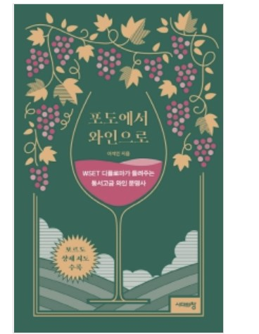

Shopping
전체
패션의류
도서
식품
가전
검색
장바구니
패션의류
도서
식품
가전

이전
포도에서 와인으로
19,800원
작가
이석인
장르
요리
출판사
시대의 창
구매수량
장바구니 담기
설명
상세정보
후기
문의
ISBM
9788959407781(895940778X)
쪽수
408쪽
책소개
이 책은 ‘와인의 발상지’인 ‘중동’을 포함해 ‘중국, 일본, 한국’에 이르는 ‘진정한 와인의 세계사’를 담고 있다.
한잔의 와인을 음미한다는 것은, 포도가 와인이 되기까지의 문명사적 경험을 느끼는 것과 같다.
와인을 처음 접하는 독자에게는 물론, 와인의 맛을 깊이 느끼고 싶은 독자 모두에게 이 책은 풍부한 와인 테이스팅 경험을 제공할 것이다.